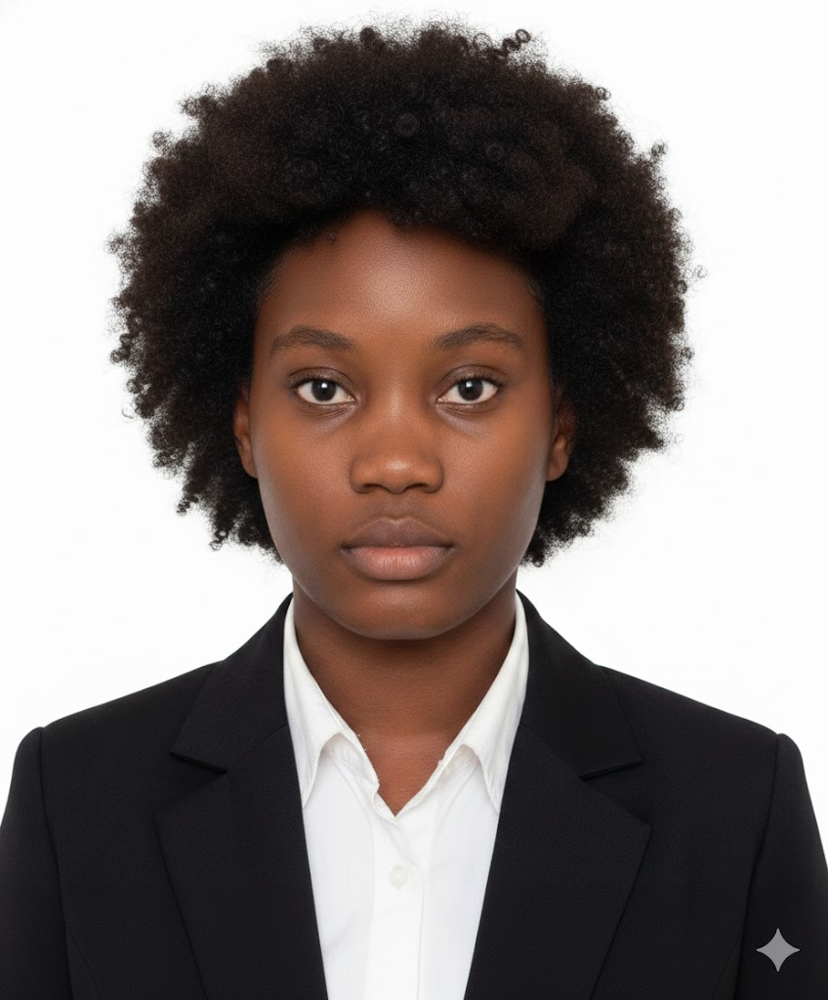

💻 Sou Técnica de Informática. Tenho conhecimentos sólidos em suporte técnico . 🌍 falo um pouco a língua inglesa e formação em oratória, o que fortalece a minha comunicação, confiança e liderança.
Uma jovem determinada, focada no crescimento pessoal e profissional.
Atualmente, atuo como Secretária na startup Quianda Tech, desempenhando funções administrativas, organização de documentos e apoio à gestão.
Também estágio na empresa F. Damata, onde adquiri experiência prática em ambiente profissional, desenvolvendo competências técnicas e operacionais
Aprender constantemente, evoluir e fazer a diferença através da tecnologia.
Tornar-me uma profissional de excelência na área de informática e gestão.